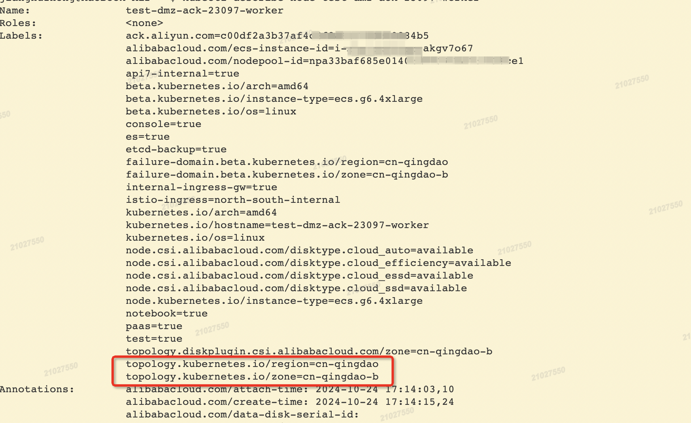

前言
平台接入多个公有云的K8s托管集群，并使用Karmada进行了多集群部署的主备容灾，公有云的集群，使用Region和Zone提供不同地域多可用区的节点，保障集群内部署的高可用，我们应当使单个集群内的多副本的应用，尽量均匀地分摊到多个可用区，保障应用的可用性。
概念
K8s定义了一些常见场景需要用到的Annotation和Label，具体可参阅Well-Known Labels, Annotations and Taints，之前使用了app.kubernetes.io/name和app.kubernetes.io/version来实现平台的多版本部署，结合Istio进行流量的管理：灰度、蓝绿等。
其中如下两个标签，分别对应公有云上的地域和可用区的。K8s中关于这两个标签的描述，可点击链接查看。
青岛阿里云中的某个节点如下，可以看到这是青岛阿里云可用区b的一台ECS。

接下来，要根据上述标签，实现单集群中应用的多可用区分布，目前想到能用的手段：
PodAntiAffinity
反亲和性，通过Required和Preferred两种方式，来强制或者优先保证部署实例分布在不同的节点上。
TopologySpreadConstraints
拓扑分布约束，控制 应用实例在集群内故障域之间的分布， 例如区域（Region）、可用区（Zone）、节点和其他用户自定义拓扑域。 这样做有助于实现高可用并提升资源利用率。
重点介绍一下第2种TopologySpreadConstraints。查看API，可供设置的字段如下：
1 | apiVersion: v1 |
文档中有详细介绍，这几个字段配合使用，总结如下：
maxSkey、minDomains、topologyKey这三个结合起来看。
（1）maxSkey，定义拓扑的最大偏差值。一旦不符合这个条件，就会触发下面的whenUnsatisfiable。
（2）minDomains，符合条件的域的最小数量。
（3）topologyKey，划分域的节点Label。
综合来看，maxSkey这个偏差值，是对符合条件的域中的实例按域分组求和。
偏差值 = 单个域中符合条件实例数量的最大值 - 单个域中实例符合条件实例数量最小值得出的结果
其中minDomains对最小值进行了干预，当符合条件的域小于minDomains，是数量最小值永远等于0，大于等于的情况下，毫无作用。
whenUnsatisfiable，如果Pod的拓扑分布不符合上面定义的约束，调度器应该如何处理。
（1）DoNotSchedule（默认），不调度，pod处于Pending的状态。
（2）ScheduleAnyway，仍然调度，并尽可能选择会使拓扑偏差变小的节点来调度。
labelSelector、matchLabelKeys
labelSelector确定查找的Pod范围，与matchLabelKeys是与的关系，matchLabelKeys用来指定哪些键作为计算分部署Pod的集合，使用场景：在Pod滚动更新时，可以通过pod-template-hash在区分不同的Pod版本。
nodeAffinityPolicy、nodeTaintsPolicy在进行拓扑计算时，是否需要需要考虑亲和性和污点
（1）Honor：要满足污点和亲和性的要求。
（2）Ignore：没有要求，所有节点计算在内。
方案
实例反亲和性
节点反亲和性，能保证应用的各实例分布到不同可用区的Node上，这里我们只能用Preferred的优先调度策略，Required的策略，如果用户的实例数较多，远多于集群中的节点的可用区数量，会导致实例Pending。
1 | spec: |
拓扑分布约束
拓扑分布约束，可以保证实例拓扑分布的均匀。
1 | spec: |
总结
拓扑分布约束，对用户而言，在理解和使用上，均存在不小的难度，建议只使用实例反亲和性实现应用优先多可用区的部署，暂不在平台上使用拓扑分布约束。